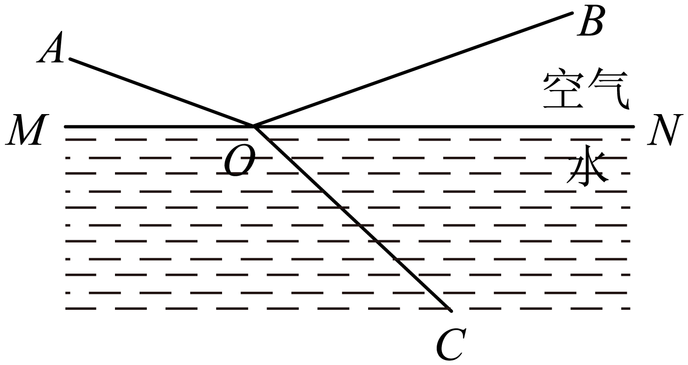
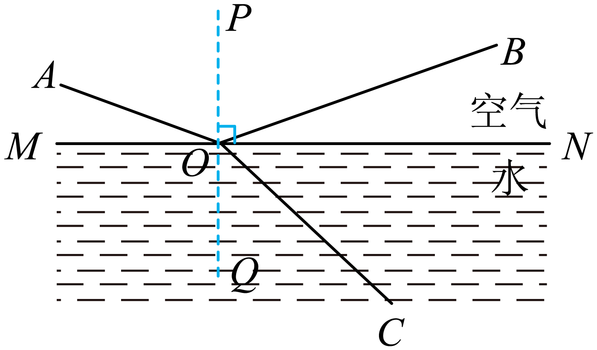

2023年北京中考物理 第8题 解析
8. 一束单色光从空气斜射入水中的情境如图所示。下列说法正确的是（ ）

A. BO是入射光，OA是反射光
B. AO是入射光，OC是折射光
C. ∠AOM是入射角，∠BON是反射角
D. 光若沿CO入射，将沿OA和OB射出
【答案】B
【解析】
【详解】ABC．如图：过点O作法线PQ，由于反射时反射光线和入射光线位于法线两侧；折射时折射光线和入射光线也位于法线两侧，所以图中AO是入射光线、OB是反射光线、OC是折射光线。∠AOP是入射角，∠BOP是反射角，故B正确，AC错误；

D．折射时光路是可逆的，所以光若沿CO入射，将沿OA射出，故D错误。
故选B。